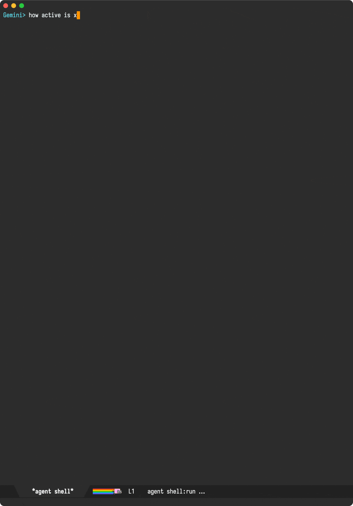

Álvaro Ramírez
So you want ACP (Agent Client Protocol) for Emacs?
Last week, I was delighted to see the Zed editor shipping beta support for their Claude Code integration. Being an Emacs enthusiast, you may wonder about my excitement. In their demo, the Zed team mentioned the integration is now possible thanks to Agent Client Protocol (ACP), which they developed in collaboration with Google. This is great news for Emacs users, as it opens the possibilities for deeper native agent integrations in our beloved editor. You can think of ACP as LSP but for LLM agents.
While I have a bunch of LLM models integrated into chatgpt-shell (including local ones), I've yet to make much headway into enabling the models to access smarter context (ie. filesystem or local tools), beyond my initial tool calling experiment.
Somehow, I wasn't super excited about tool calling, as it felt like these integrations would fall short when compared to more advanced agents like Anthropic's Claude Code or Google's Gemini CLI. In fact, I haven't been that enthusiastic about these agents, since they offered relatively little API surface to enable deeper Emacs integration (which is where I live!). That is, until ACP came along.
With ACP in mind, I'm much more likely to get on board with Emacs-agent integrations. I can now delegate all that complex agent logic to external tools and focus on building a great Emacs experience I'd be happy with.
And with that, I had an initial go at prototyping a bare minimum but with enough UX shell goodies to get me excited about it. I chose Gemini for this prototype. You can see it all in its minimal glory:

So how badly do you want ACP support in your beloved Emacs?
While getting the initials kinda working was relatively straightforward (with everything I already know about building chatgpt-shell), adding support for all ACP features with a delightfully polished Emacs experience will take a bunch of effort. While I'm excited about the prospects, dedicating a chunk of my time to make this happen isn't super feasible. You may have noticed more Emacs-related work/posts from me lately. This is currently possible because I've gone full indie dev. The flexibility is great, but doing Emacs things isn't exactly gonna help pay the bills unless interested folks help fund/support the effort.
My shell packages have quite a few enthusiastic users who more often than not, are using my package to talk to paid cloud services from the likes of OpenAI, Anthropic, or Google. I'm looking at you folks! I understand you're sending money to these companies who are providing you with a great service, but also remember the lovely Emacs integrations you use, which also need funding (much more than these well-funded commercial entities). While I'm a fan of chat-like Emacs shells for LLM/agents and would like to build a new agent shell, I also want to dedicate a chunk of this effort to building a UX-agnostic ACP Emacs library (acp.el). This library could be leveraged by me or any other Emacs package author.
So how badly do you want ACP support in your beloved Emacs? Enough to take your wallets out and help fund it?